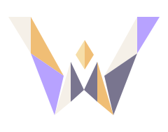

Display / Space Grotesk
WARLOCK
Geometric construction with room to breathe.

WARLOCKA window system, built with Elm
Crafted for flow.
Keep your place.
Make each action clear.
Let the work move.
Geometry, event streams, and a steady center.
The visual language
Spaced event nodes meet a stable diamond. Folded facets give each transformation a visible shape.
Animation starts only when you choose it.
The identity system
Ink and parchment carry the everyday interface. Lilac, mint and gold give the artwork its character.
#10111A#F5F0E8#B7A2FF#7DE2C1#F0BE75Display / Space Grotesk
WARLOCK
Geometric construction with room to breathe.
Interface / Inter
Your place, preserved.
Familiar language and readable controls.
Technical / JetBrains Mono
event → update → view
Explicit changes, inspectable behavior.
Original GPT-generated artwork